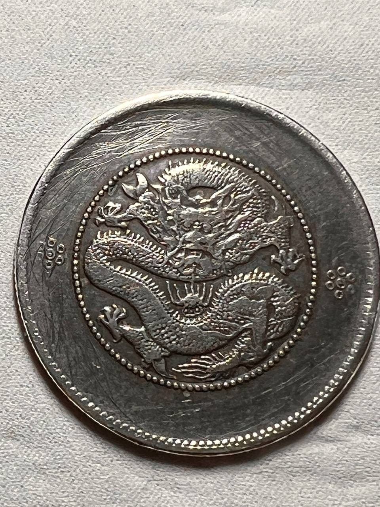
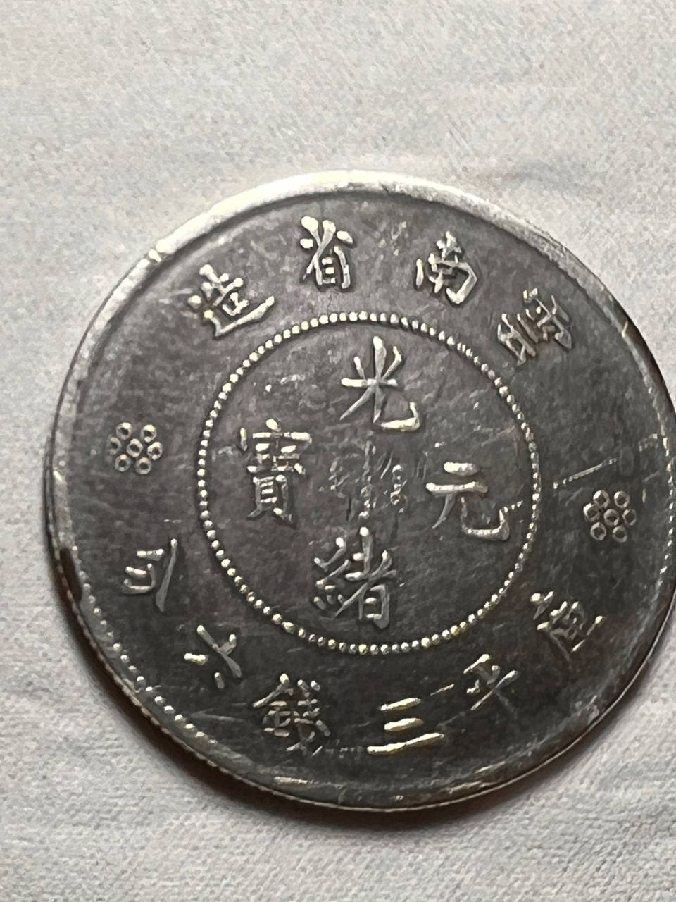

雲南半圓龍 · 老龍與困龍圖鑑（分享版）
雲南省造光緒元寶 庫平三錢六分 · 版別、規格、成色自測、估價 · 2026-10-31
圖鑑 雲南省造光緒元寶 庫平三錢六分（半圓） —— 點分「老龍」同「困龍」，
邊個版值錢，點樣自己驗成色。
呢份係通用參考版：適合朋友之間互相對照實物用。
一、先搞清楚你手上係邊個版
雲南半圓只有兩大類，分錯就係幾倍價錢嘅差別：
| 項目 | 光緒老龍（老雲南） | 光緒困龍（新雲南） |
|---|
| 背面英文 | 有（YUN-NAN PROVINCE ＋ 3 MACE AND 6 CANDAREENS） | 冇 |
| 龍外珠圈 | 冇（盤龍較大） | 有（連續小圓點圍住條龍，盤龍較細） |
| 俗稱 | 老龍／老雲南／粗字粗龍 | 困龍／新龍／團龍／細龍小字幣 |
| 鑄期 | 1907 年 8 月起（光緒三十三年） | 宣統二年（1910）4 月後改鑄；《雲南市志》載宣統三年（1911）統一幣制後專鑄 |
| 鑄量（卡泉，民間統計） | 約 199 萬枚 | 約 8,976 萬枚（相差 45 倍） |
| 成色 | 88.88%（文獻） | 較低；火珠下小圈為後期加鑄減色之版別記號 |
| 市場定位 | 有明顯溢價 | 常態流通版，量大 |
兩個判準要同時用：背面有冇英文、龍外面有冇一圈連續小圓點（珠圈）。
兩者方向應該相反 —— 老龍有英文無珠圈，困龍無英文有珠圈。
如果兩個答案同時成立（有英文又有珠圈），即刻當可疑：市面上有人把困龍磨去細節
再加刻英文冒充老龍。
二、困龍係點嚟
- 1905 年（光緒三十一年）滇省獲准設分廠，廠址昆明錢局街舊寶雲局；招四川技工、購德國機器、祖模向天津廠請教。
- 光緒三十三年八月（1907 年 8 月）開鑄；1908 年 2 月改稱「度支部雲南造幣分廠」—— 係清代最晚成立嘅造幣廠。
- 初期鑄「老龍」（背面帶英文，成色 88.88%）。
- 宣統二年（1910）4 月後銷毀老版祖模改鑄新版 —— 因為龍紋外加了一圈珠圈，泉界叫「困龍」。
- 《雲南市志》載：宣統三年（1911）為統一幣制，將粗字粗龍各祖模全部銷毀，專鑄細字細龍半圓銀幣 —— 所以困龍又叫「細龍小字幣」。
- 背面火珠下嘅小圓圈，文獻指係後期加鑄減色嘅版別區分記號；減色後在流通中失去信用，逐漸折中使用。
三、標準規格（三錢六分／半圓）
| 項目 | 標準值 | 備註 |
|---|
| 理論重量 | 13.43 g | 實測常見 13.0–13.4 g |
| 直徑 | 約 33 mm | 部分資料記 33.5 mm（最大外徑） |
| 平均厚度 | 1.46–1.53 mm（反推） | 資料庫常記「1.9 mm」，係量邊廓，唔可以照抄 |
| 成色 | 老龍 88.88%；困龍較低 | 困龍減色幅度文獻不一 |
| 面額定位 | 半圓／五角／貳等輔幣 | 重量係一圓嘅一半，但市價遠低於一半 |
四、六個亞版點分
困龍半圓嘅亞版靠龍嘴下火珠正下方嘅小圓圈分：數目（2／3／4）決定「幾空圈」，圈內有冇一點決定「空圈」定「點圈」（點圈又叫「回珠」）。
| 版別 | 暗記特徵 | 市場地位 |
|---|
| 二空圈 | 火珠下 2 個空心圈 | 最普遍（內地電商整批在售，MS63 評級幣有 500+ 條評價） |
| 三空圈 | 3 個空心圈 | 常見 |
| 四空圈 | 4 個空心圈 | 常見（公博 AU50 有在售） |
| 雙點圈（二點圈／二回珠／二盈珠） | 2 個圈，圈內各有一點 | 與馬尾珠極相似，分別在龍尾 |
| 三點圈（三回珠） | 3 個圈，圈內各有一點 | ← 本次鑑定結果；另有四釘版／五釘版等子版 |
| 四空圈 = 四圈版 | 4 個空心圈 | 文獻明言「目前沒有發現四點珠」，四圈版即四空圈 |
| 馬尾珠 | 雙點圈外觀，龍尾帶珍珠紋飾 | 新龍版中公認罕見品種，有明顯溢價 |
五、相片

龍面：盤龍緊縮於珠圈之內（「困龍」命名由來）；背面無英文。
字面：珠圈內「光緒元寶」滿漢文，上環「雲南省造」，下環「庫平三錢六分」，左右各一朵六瓣花星（標準裝飾，非版別暗記）。
六、自己驗成色：排水法
排水法（阿基米德法）—— 唯一唔靠假設嘅體積量法
- 電子磅（0.01 g）放小杯，歸零
- 杯內裝水放上磅，記讀數
- 幼魚絲吊住錢幣，完全沉入水中、唔碰杯底杯壁，記新讀數
- 體積（cm³）= 兩次讀數差；密度 = 重量 ÷ 體積
以 13.0 g 計，排水讀數對應：
| 假設成色 | 合金密度 g/cm³ | 排水讀數（= 體積 cm³） | 對應平均厚度 |
|---|
| 88%（老龍標準） | 10.28 | 1.265 | 1.46 mm |
| 86% | 10.25 | 1.269 | 1.47 mm |
| 84% | 10.21 | 1.273 | 1.50 mm |
| 80% | 10.14 | 1.282 | 1.51 mm |
| 70% | 9.98 | 1.303 | 1.53 mm |
| 40%（文獻最低說） | 9.52 | 1.365 | 1.61 mm |
困龍嘅成色變異極大（文獻由 80%+ 到「據說低於 40%」都有），所以排水法對呢個品種特別有價值：體積 1.26–1.28 即高銀；1.30 左右約七成銀；1.37 以上就係重度減色版。密度低過 9.4 或高過 11.0 就要當假幣或鉛心處理。
七、參考價（香港／台灣收購商水平）
| 級別 | 金額 | 來源／備註 |
|---|
| 回收價 · 未使用 MS | HK$1,452 | 古金鑒寶 2026-09-01 報價表（NT$6,000 × 0.242） |
| 回收價 · 近未用 AU | HK$726 | 同上（NT$3,000） |
| 回收價 · 極美 XF | HK$484 | 同上（NT$2,000） |
| 回收價 · 美品 VF | HK$242 | 同上（NT$1,000） |
| 回收價 · 普品 F | HK$145 | 同上（NT$600） |
| 實際掛牌 · 困龍 AU53（公博） | ¥250 ≈ HK$275 | 首席收藏網賣家標價（非成交價） |
| 實際掛牌 · 老龍 XF40（公博） | ¥1,500 ≈ HK$1,650 | 首席收藏網賣家標價（非成交價） |
回收價 ≠ 零售價。收購商報嘅係買入價；藏家之間成交一般係回收價嘅
1.5–3 倍。半圓（三錢六分）相對七錢二分有明顯「價值斷崖」——重量一半，價錢往往只有十分一，
原因係小面額嘅收藏人口少、流動性折讓大。
小心假行情：網上流傳「雲南三錢六分成交 138 萬／155 萬／185 萬」之類
數字，出自內容農場，成套虛構。半圓真品數百至千餘港元級數；任何聲稱六位數以上嘅成交價，
除非有 PCGS／NGC 評級編號同拍賣行紀錄，否則當假數據。
八、真偽要點
困龍鑄量近九千萬枚，存量多、仿品亦多。已知兩種主要造假：
- 低銀／銅鍍銀仿品：表面過白或發黃、重量偏輕、龍鱗呆板、珠點大小不一。
- 真幣翻模版：字口圓鈍、地章有細小砂眼。
- 改刻冒充老龍：把困龍磨去背面細節再加刻英文 —— 英文位置地章會粗糙、字母深淺不一。所以「有英文」＋「有珠圈」兩個答案同時成立，即刻當可疑。
| 項目 | 真品 | 仿品 |
|---|
| 字體 | 筆畫挺、深峻、轉角清晰 | 浮腫、軟、邊緣圓滑 |
| 龍鱗 | 層次分明、立體 | 平板、線條粗鈍、融入底板 |
| 珠點／珠圈 | 顆顆分明、大小一致 | 大小不一、缺漏、模糊 |
| 邊齒 | 一次性衝壓，深峻均勻 | 深淺不一、有毛刺或接縫 |
| 重量 | 約 13.0–13.4 g | 明顯偏輕 |
| 包漿 | 自然氧化、有層次 | 化學造色、通體一致 |
| 英文（老龍專用） | 字母大小一致、間距均勻 | 歪斜、間距不一、拼錯；或改刻冒充（地章粗糙） |
高仿「真銀假幣」含銀量可以做到接近真品，密度同磁性都過關。所以密度同磁性只能排除低質假幣，唔可以證明真品。最終仍要靠包漿、龍鱗細節、或者 PCGS／NGC 評級。
九、保存
- 唔好洗、唔好擦、唔好拋光。PCGS／NGC 一見人為清洗就只給「Details」評級，價值跌 50–80%。幣面發黑係自然氧化，唔需要處理。
- 用無酸紙夾或 Mylar 夾。唔好用 PVC 軟膠套（增塑劑會腐蝕銀面）。
- 唔好同其他銀幣碰撞 —— 困龍地章較易出現撞痕。
- 摸邊唔摸面，手汗會加速氧化。
- 唔好用「牙咬」「火燒」「白醋泡」等土法驗銀，全部會造成不可逆破壞。
十、資料來源
- 古金鑒寶（香港錢幣回收）《光緒元寶面額全拆解》2026-09-01 — 三錢六分規格與回收價表
- 古金鑒寶《新雲南版光緒元寶》《老雲南版光緒元寶》產品頁 — 老／新判準、仿品特徵、保存建議
- 知乎《光緒元寶雲南省造三錢六分幣版識別詳解及拍賣價格行情》（老周，2023-10-21）— 7 個版別與暗記規則
- 卡泉銀元 kkqa.net — 光緒老龍半圓、光緒困龍半圓鑄量與規格（民間統計）
- 怡和商行《省造傳奇》— 新舊雲南主要辨別方法
- 搜狐（古泉說，2021-04-03）《這樣的雲南省造光緒元寶價值極高》— 困龍成因、老龍成色 88.88%、暗記＝減色記號
- 搜狐（小鈺聊收藏，2022-09-30）《雲南老龍半圓的版別知識》— 老龍三版、火焰數目、市價
- 360doc／百度文庫《雲南半圓龍版別圖解（一）》引《雲南市志》— 困龍＝細龍小字幣、宣統三年統一幣制
- 首席收藏網 shop.shouxi.com — 困龍 AU53、老龍 XF40 實際掛牌價
- 百酒樓 coin.100wine.tw 2026 收購價表 — 交叉核對